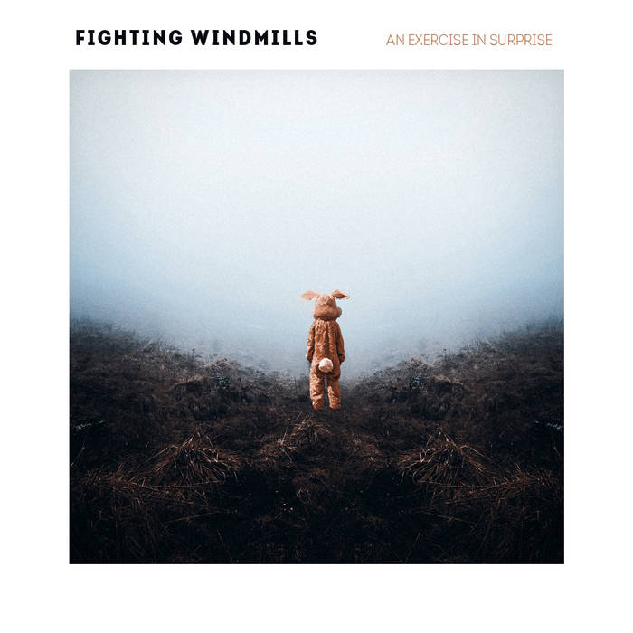
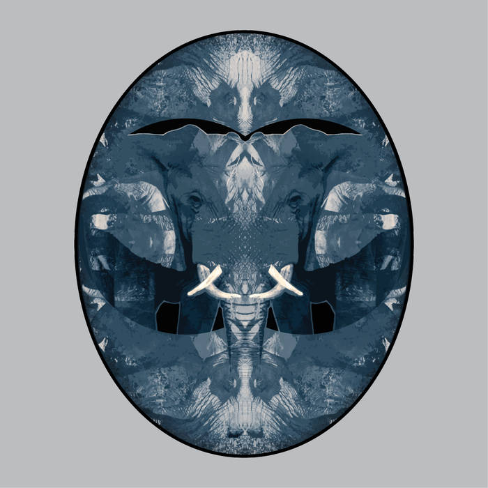
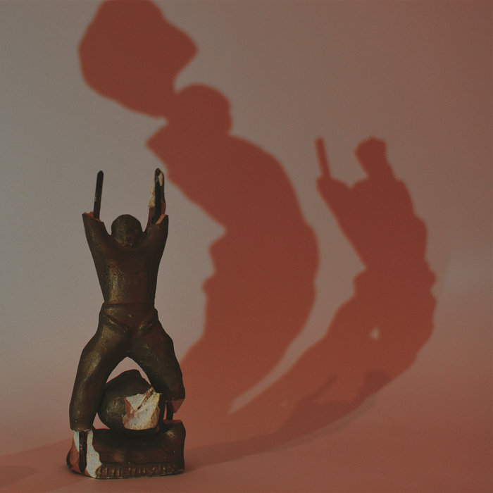

Recently released Albums:
An Exercise in Surprise
Fighting Windmills has finally released their new album, consisting of 5 tracks, each one better than the previous.
You can listen it for free on: Bandcamp.

Project Blue Team
On 9th May this year, The Local Blue released their psychedelic album named Project Blue Team.It was recorded at the "Blue Town" studio based in Skopje and the artwork was made by Kristijan Novkovski.You might want to check them out: The Local Blue Trip

Sisiphys
As the band Pluto's Doubts says, their album Sisiphys was recorded in the grandpa's Mile mansion in Ljubanci suburb and studio Alshar by Ivica Jankulovski and studio in The Basement by Angel Kjosev.This album is quite experimental and everyone should give it a try: Bandcamp

Simpo Squad
Dont let us forget the alternative Hip-hop scene in Macedonia. A couple of young fellas have joined their forces on a new material that you must try it out on: Soundcloud